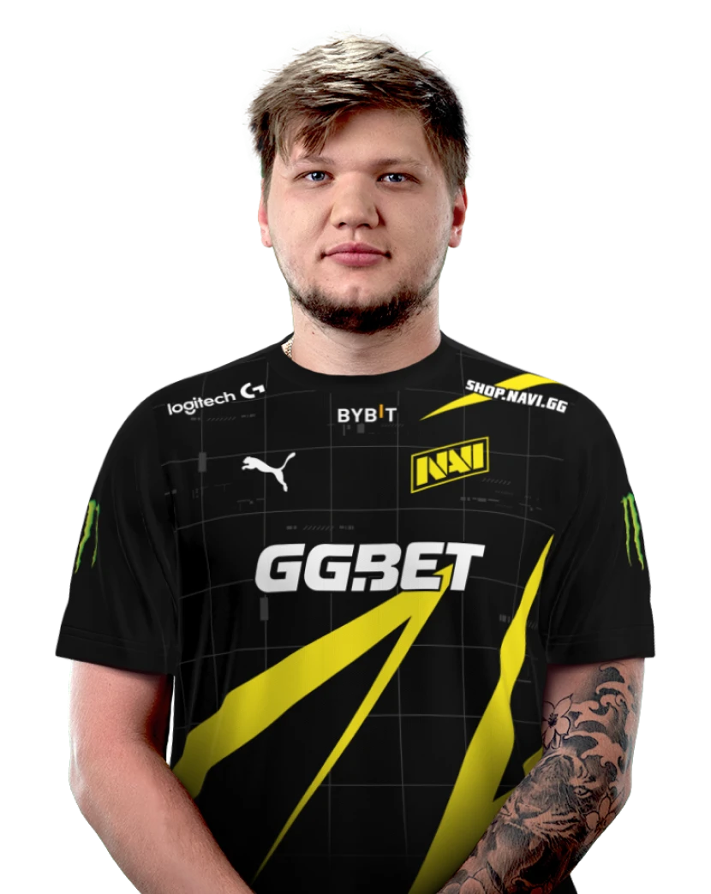
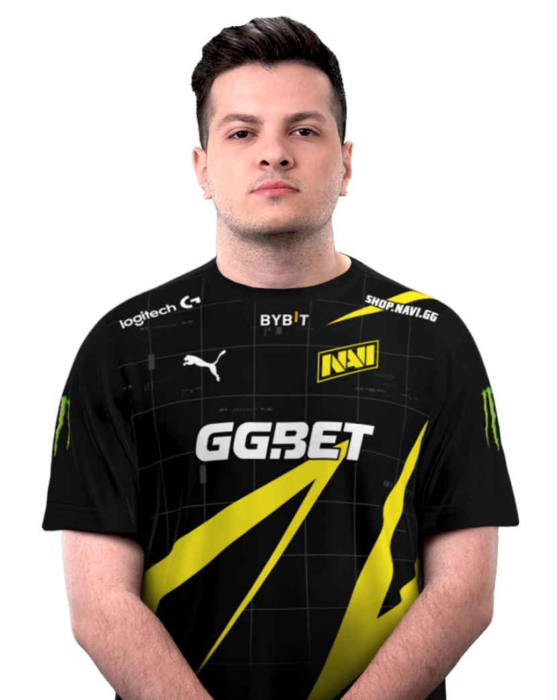
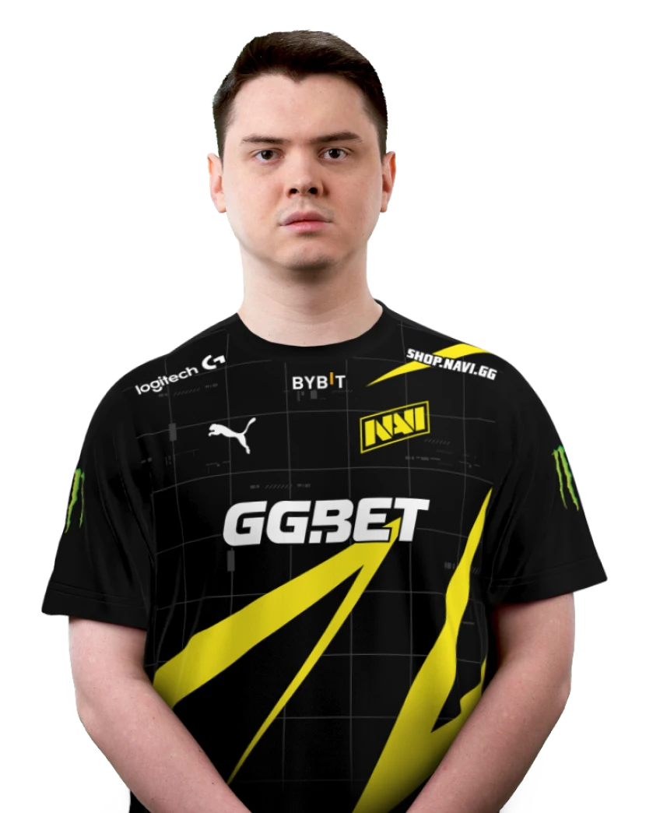
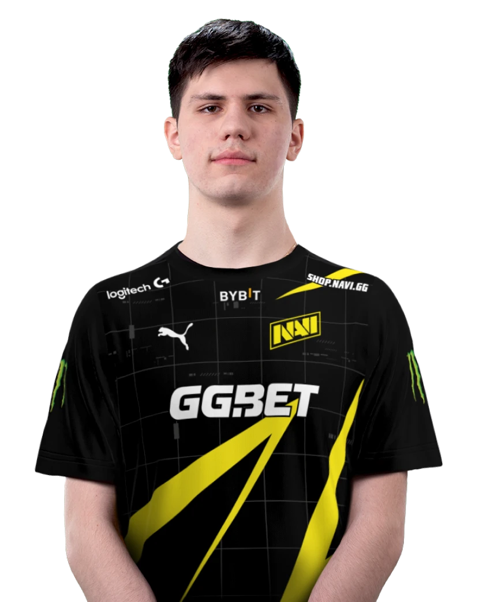
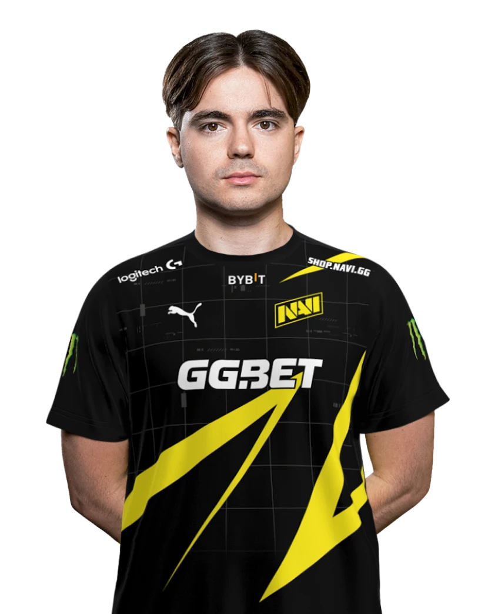

.png)
Текущий состав

s1mple
Александр Костылев
Призовые: $1 198 630
Возраст: 25 лет

perfecto
Илья Залуцкий
Призовые: $755 400
Возраст: 23 года

electronick
Денис Шарипов
Призовые: $1 157 000
Возраст: 23 года

b1t
Валерий Ваховский
Призовые: $666 000
Возраст: 19 лет

sdy
Виктор Оруджев
Призовые: $94 865
Возраст: 25 лет
История команды

Создание команды
Команда была основана 17 декабря 2009 года. После распада проекта KerchNET, поддержку бывшим игрокам команды оказал известный меценат и организатор киберспортивных турниров Мурат «Арбалет» Жумашевич. Новая команда получила название «Arbalet.UA». 31 января 2010 года Arbalet.UA побеждает в турнире Arbalet Cup Asia 2010, дважды обыграв китайцев из TyLoo и в финале взяв верх над ForZe 16:5. В феврале был объявлен конкурс на лучшее название команды. К тому времени этот состав выступал под клантегами «Arbalet.UA», а также «Na`Vi». Голосование проходило на сайте hltv.org, где было оставлено более 2000 комментариев. Победителем стал португалец Bruno «hArt1k» Estevens, предложивший название «Team Vincit», производным от которого стало финальное название «Natus Vincere» (с лат. — «рождённые побеждать»), позволившее оставить тег без изменений — «Na`Vi». 2012 год
В конце 2012 года весь состав команды Counter-Strike перешёл на новую игровую дисциплину. В феврале 2013 года состоялось первое боевое крещение на лан-турнире в Вене. Первые медали ребята выиграли в апреле того же года на финалах пятого сезона SLTV StarSeries в Киеве ...
2013 год
В августе 2013 года в составе команды произошли серьёзные изменения, команду покинул Егор Маркелов. После небольшой паузы, менеджмент команды принял решение и пригласил двух игроков из России — Дениса Костина и Антона Колесникова, младшего брата Алексея Колесникова. Основными задачами поставленными перед составом были сыгранность и стабильность. Однако коллектив не смог показать хороших результатов и после DreamHack Winter 2013 в команде снова произошли изменения. 9 декабря 2013 года команду покинули Арсений Триноженко и Антон Колесников. Триноженко заявил, что покидая команду, он останется в проекте Natus Vincere.
2017 год
28 июля 2017 года организация исключила Ладислава «GuardiaN» Ковача и Дениса «seized» Костина из основного состава по Counter-Strike: Global Offensive. Контракты игроков выставлены на трансфер. Главной причиной исключения игроков стало неудовлетворительное выступление команды на PGL Major Kraków 2017. На турнире в Польше Natus Vincere не смогли попасть в сетку плей-офф и впервые за три года лишились статуса «Легенд». 9 августа 2017 года Даниил «Zeus» Тесленко перешёл в Natus Vincere после года выступлений за Gambit Esports. В стартовый состав также вернулся Денис «seized» Костин, которого выставляли на трансфер после результата команды на PGL Major Kraków 2017. 17 октября 2017 года появились слухи об исключении Дениса «seized» Костина из основного состава Na’Vi. На следующий день организация подтвердила эту информацию. 6 ноября 2017 года стало известно, что Денис «electronic» перешёл с команды FlipSid3 Tactics в Natus Vincere. На следующем же Major турнире Na’Vi вышли в полуфинал, а затем в финалы ещё нескольких крупных турниров. Летом 2018 Na’Vi выиграли 3 турнира подряд, включая ESL One Cologne. Игрок команды Александр «s1mple» Костылев за этот промежуток 6 раз удостаивался звания MVP.
2019 год
28 мая 2019 года Иоанн «Edward» Сухарев был заменён на Кирилла «BoombI4» Михайлова. 29 мая 2019 года Edward стал частью Winstrike Team на правах аренды. 7 сентября 2019 года у Edward истёк срок аренды, и он вернулся в Na’Vi. 14 сентября 2019 года Даниил «Zeus» Тесленко и Михаил «kane» Благин покинули Na’Vi 20 сентября 2019 года к составу присоединился Ладислав «GuardiaN» Ковач, Андрей «B1ad3» Городенский стал тренером.
2020 год
24 января 2020 года Natus Vincere подписали Илью «Perfecto» Залуцкого в состав, Ладислав «GuardiaN» Ковач был отправлен на скамейку запасных. После подписания молодого таланта, команда дебютировала на ICE Challenge 2020,где заняла второе место. Уже на следующем турнире, главном турнире зимнего периода и одном из самых престижных турниров, IEM Katowice 2020,они одержали победу. Александр «S1mple» Костылев стал лучшим игроком турнира, получив заветную медаль, а Boombl4 и Perfecto выиграли свой первый крупный турнир.
2021 год
В 2021 году Natus Vincere стали победителями PGL Major Stockholm. Natus Vincere стали единственной командой, выигравшей мейджор без единой проигранной карты.
2022 год
PGL Major Antwerp 2022 команда провела достаточно хорошо, она сразу прошла в этап «Легенд», где сначала одолела G2 Esports со счётом 19:17 в формате Best of 1, затем победила BIG со счётом 16:8, а в решающем матче одолела Ninjas in Pyjamas со счётом 2:1 в формате Best of 3, тем самым обеспечив себе место в плей-офф. В 1/4 финала Natus Vincere победили Heroic — 2:1, в полуфинале справились с ENCE — 2:0, но в финале не смогли одолеть FaZe Clan, поэтому вновь заняли второе место на данном турнире. 29 мая 2022 года Кирилл Михайлов покинул состав Natus Vincere, как объявлено, в связи с репутационными рисками команды. 3 июня 2022 года к составу присоединился Виктор Оруджев «sdy», также известен как «somedieyoung», встав на место рифлёра вместо Дениса «electronic» Шарипова, ставшего капитаном.